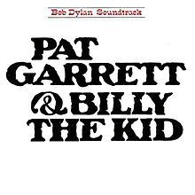

Pat Garrett & Billy the Kid

Released: July 13, 1973
Length: 35:23
Producer: Gordon Carroll
Label: Columbia
Side 1
Main Title Theme (Billy) (Instrumental)
Cantina Theme (Workin' for the Law) (Instrumental)
Billy 1
Bunkhouse Theme (Instrumental)
River Theme (Instrumental)
Side 2
Turkey Chase (Instrumental)
Knockin' on Heaven's Door
Final Theme (Instrumental)
Billy 4
Billy 7
Home